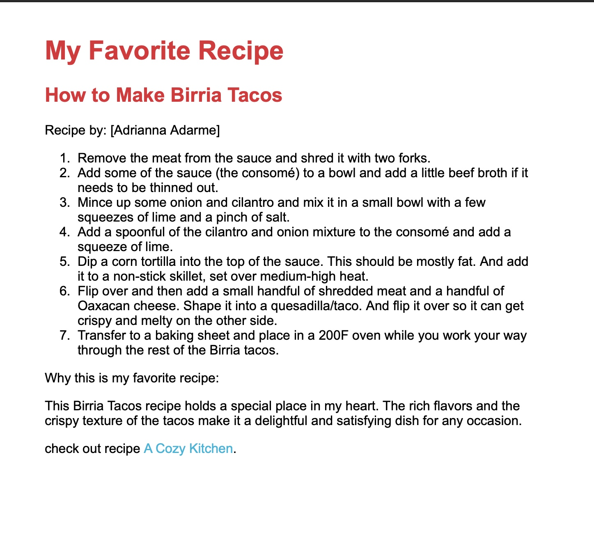
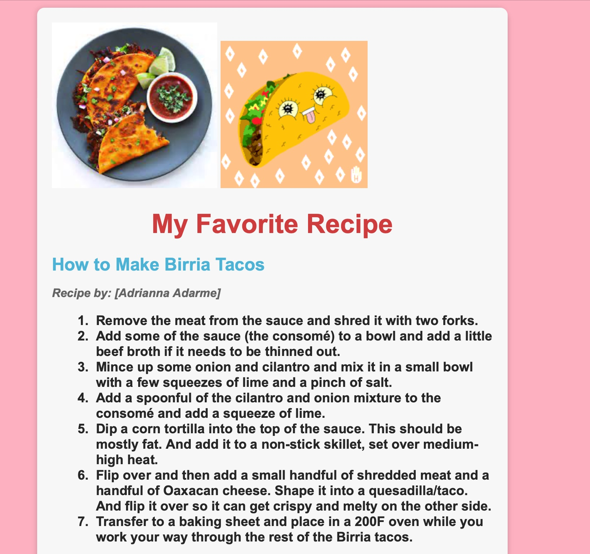
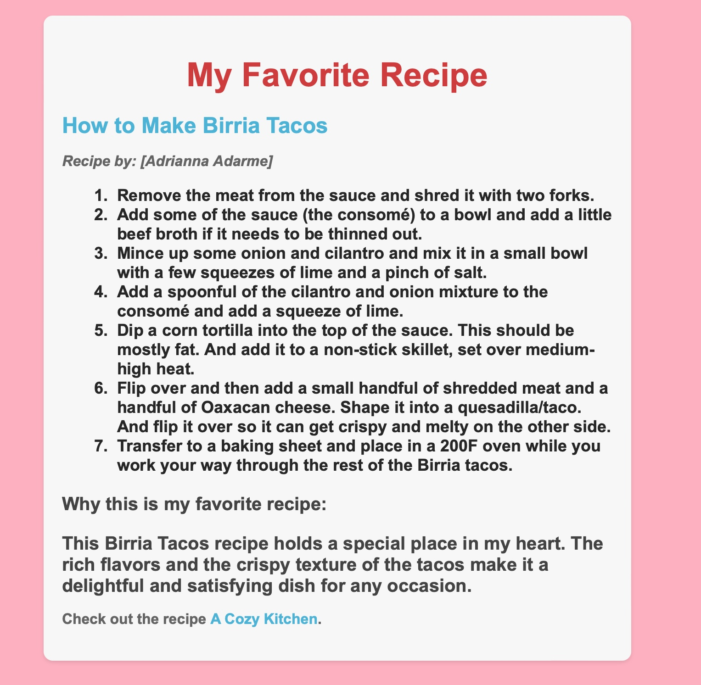

Project Labs



Reflections
Lab 1 Reflection
Lab 1 was creating your HTML Favorite Recipe, I found this lab to be really fun because I was able to speak on my favorite recipe and also be able to learn how to code an HTML page.
Lab 2 Reflection
Lab 2 was implementing a CSS page and I found this lab to be fun because I created my soon-to-be web page the way I like so that makes it unique to me.
Lab 3 Reflection
Lab 3 was about adding a visual element to your web page, I decided to add a GIF of a dancing taco because my favorite recipe was tacos.
Lab 4 Reflection
Lab 4 was about implementing page layout, this was challenging for me because it was my first time trying to create a page layout with other sections in it. Ultimately, I decided to just add an advertisement to my webpage with a link to a taco salsa recipe for the tacos.